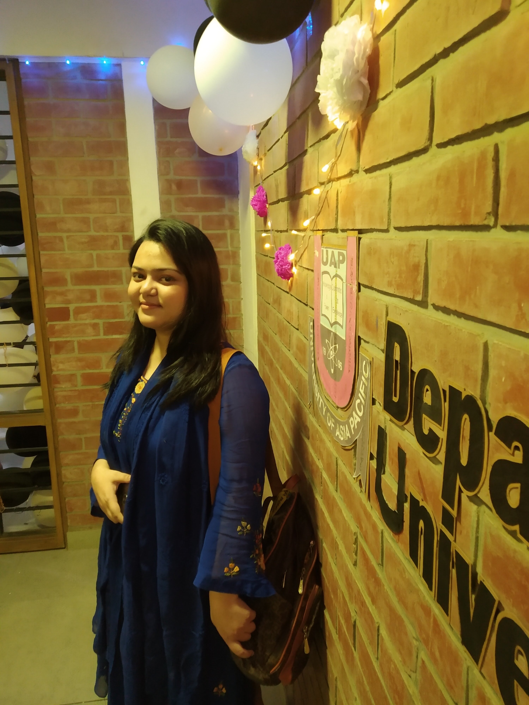
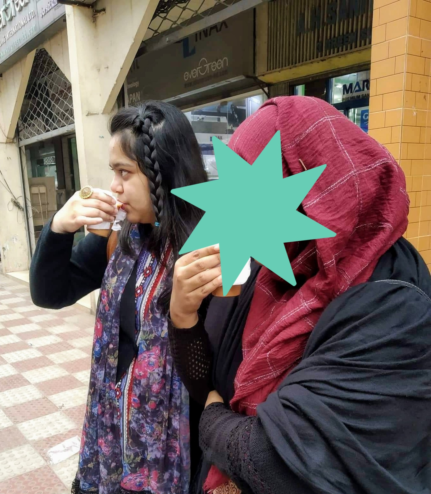

As a Computer Science and Engineering student it was hard to find anyone with similar interest. Because the subject itself is very vast. Anyone can do anything from this subject. In this post I will talk about my experience as a first year student in Computer Science and Engineering.
My University Life
I loved going to the university because there was no dress code. Basically you can dress up like a clown and go to university if you want, hehe. Also you can do whatever you like, as in, not do class if you don’t want to or leave class if you want. I liked that flexibility. Though I don’t do it because I like doing class. Like I really loved our sociology class. Programming classes are my favorite. Also there is NO HOMEWORK!! Except for the math classes though. Some math teachers like giving home work. Other than that I use to hate chemistry class and chemistry lab. EEE (Electrical and Electronic Engineering) was one of my favorite. I loved it and enjoyed it. But didn’t do a lot. Because I was too busy doing research on other things.
The best part about university is Canteen. I loved eating and hanging out with friends inside our university Canteen. We would eat and steal each other’s food and also give each other treat. I love our university Coffee. There is also a drinks bar outside our canteen. There they sell different kinds of drinks and juices and also there is very nice sitting area. It’s like a small restaurant. We sit to study, hangout and chill there.
Also eating out with friends is very common. My friends and I would go out and eat a lot of street food like fuchka, bhelpuri, shinggara, etc. Drinking tea on the street with friends is just an amazing feeling.
The things I did
First of all, I started going to Library. I went to read books about different languages, software development, design patters, etc. I would literally pick up random book and start reading it during my class breaks. It was really fun. I got to know different terms. And then later search about them. I think first year of university is about exploring. Getting acquainted with different things and terminologies. I was never fan of reading books. But when it comes to programming or software or anything related to my subject, I happily read those books.
The reason why I love reading books on these things is because they are very organized. A lot of work was done to create these books. Books tend to give more proper and correct information. Books are great way to get started with something, specially programming languages.
I started joining different Facebook groups. It is important to be part of a community with similar interests. You get to see people’s questions and answers. You also get to ask questions when you are stuck. More importantly you also get to make friends there. I also created account in different platforms to get more exposure.
Problem solving. I am not a big problem solver, yet. I am also not an addict to it. I have participated in programming contests in my first year. But it was a good start. I started solving problem from the beginning using C programming language. Now I solve problem using Java.
I started to commit on Github. It’s a good practice to start using Github from the beginning and keeping all your code there. It is safe, you have all your code organized and you can access it from anywhere. Also it will be handy for your future employer to hire you.
So this is how I spent my first year at the university. It was fun but obviously I made a lot of mistakes and learned many things as well. It’s a learning process. Hopefully I will learn and discover more on my second year. So if you like my blog post and also want to know more on what things I got to discover while doing research follow me on my social media. Also share with your friends.